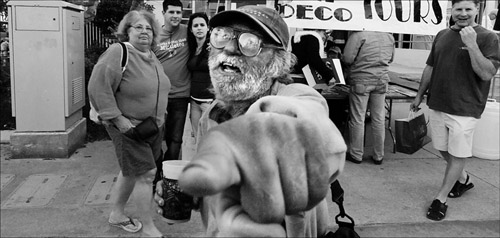

Hansi

Hansi ist ja eigentlich ein Klischee-Wellensittich-Name. Doch gibt es auch Menschen, die so heißen, zum Beispiel einen Säufer in Stuttgart. Einen von der Sorte, die man vornehmlich auf Parkbänken antrifft, wo sie sich schon morgens um zehn einen Halben reindrücken. Für das samstägliche Fußballspiel VfB Stuttgart gegen den FC SV Werder Bremen haben sich Hansi und vier Kumpels ähnlicher Provinienz allerdings in eine Kneipe begeben.
Die selbe Kneipe haben auch drei Freunde und ich aufgesucht, um dort in Ruhe das Spiel verfolgen zu können und uns nebenbei ein paar Pilsetten sowie ein SchniPo zu genehmigen. Als wir uns hinsetzten war auch alles noch ruhig. Doch schon zwei Minuten später, als das 1:0 für Stuttgart fiel, sprang Hansi auf und schrie: JA! JAA! JA! JAAAAAA! Dann lehnte er sich zu seinem recht stillen Kollegen rüber und schrie ihn an: JAAAAAA! JAAA! JAAAAAAAAAA!
Wenn das bei jedem Tor so abgeht, könne das ja ein heiteres Spiel werden, dachte ich noch so bei mir. Doch es wurde noch viel schlimmer. Das 1:0 war für Hansi nur der Startpunkt für einen ca. 100-minütigen Pöbelreigen. In bestem Schwäbisch fing er an den Schiri sowie den Kommentator als Bayer zu verunglimpfen und ihnen Prügel anzudrohen. Das ganze spickte er mit "Du dreckige Sau, du!"-Rufen. Wen er dabei genau meinte, war schon recht bald nicht mehr zu identifizieren.
Des weiteren lobte Hansi den VfB und konstatierte unentwegt, dass "wir gut drauf seien heute" und mindestens ein 3:0 für Stuttgart drin sei. Jedenfalls zu Anfang. Schon bald erhöhte er sein Gebot erst auf 6:0 und später auf 8:0. Zusätzlich kam er nicht umhin wenigstens alle zwei Minuten alle Anwesenden darauf hinzuweisen, dass der VfB auf jeden Fall den "Nuller" machen würde, also die Bremer zu Null besiegen. Auch nach dem 3:1 hatte Hansi diesbezüglich die Hoffnung noch nicht ganz aufgegeben.
Außerdem erging sich Hansi in wahren Pöbelorgien geben die Bremer. Ein Auszug daraus ging ungefähr so:
Die dreckige Fischköpp! Die können nichts! Die können nichts, die dreckigen Fischköpp, die! Die können nichts! Die können nichts! Die können nichts!!
Das ganze ohne merkliche Satzzeichen oder Pausen. In der Halbzeitunterbrechung hat Hansi dann kurz eine geraucht. Dies, und sein Gebrülle aus der ersten Halbzeit, haben seine Stimme leicht lädiert, doch der Eifer war ungebrochen. Das Gepöbele ging munter weiter.
Wir dagegen saßen relativ ruhig doch innerlich bebend an unserem Tisch und entwickelten ein gefährlich hohes Aggressionspotenzial. Eigentlich waren wir gekommen um gemütlich das Spiel zu sehen, doch stattdessen mussten wir uns die beinahe Mantra-artigen Tiraden dieses von jahrelangem Alkoholmissbrauch im Kopf weich gewordenen Schwaben anhören. Unsere Stimmung war dem entsprechend schlecht. Da half auch Bier nur bedingt.
Allerdings stellte sich schon nach einigen Stunden etwas Merkwürdiges ein - die ganze Situation verklärte sich im Dunst des Vergangenen. Das Leid fiel dem Vergessen anheim und zurück blieb die Gewissheit das wahrscheinlich kurioseste Spiel überhaupt gesehen zu haben. Schon bald musste ich beim Gedanken an Hansi schmunzeln und für den Rest des Abends machte ich mir Vorwürfe, dass wir keine Handykamera auf ihn gerichtet haben um sein wildes Treiben filmisch festzuhalten.
Allerdings ergibt sich bald eine überaus vorzügliche Gelegenheit, das nachzuholen. Der VfB Stuttgart spielt im DFB-Pokal gegen den FC Bayern München. Hansi wird Gift und Galle spucken. Und ich überlege ernsthaft, mich für dieses Ergeignis in den ICE zu setzen und nach Stuttgart zu schüsseln.
Wer sich das Erlebnis ebenfalls geben möchte, fährt einfach nach Stuttgart bzw. genauer gesagt nach Bad Cannstatt. Dort geht man aus dem Bahnhof raus Richtung Fußgängerzone, hält sich leicht links und geht in die Kneipe rechts neben der kleinen Crêpes-Schmiede, deren Namen mir leider entfallen ist die auf den munteren Namen PFIFF hört. In dieser Kneipe geht man ganz nach hinten durch die Tür, auf der Toiletten steht, in den Raucherraum, in dem man nicht rauchen darf.
Dort wird - mit etwas Glück - Hansi mit seinen Spießgesellen sitzen und sich bei einem gepflegten Weizen für das Spiel warm machen. Viel Spaß dort!
(Bild: Hey You von danny.hammontree unter CC-Lizenz)


7 Kommentare zu "Hansi"
- Externe Links im selben Fenster öffnen
- Externe Links in neuem Fenster öffnen
jksimpson
Hehe, wenn ich mir die letzten Posts so anschau, dann würde ich sagen, Alkoholkonsum ist so das Bindeglied...
Herschel Rubinstein
morgen wechsele ich das thema in richtung finanzmarkt
daki
Du bist im Januar natürlich herzlich eingeladen, lieber Herschel.
Die Kneipe hieß ganz schlicht 'PFIFF', wenn ich mich richtig erinnere. Erwähnenswert währe noch, dasss sich Hansi und Kollegen das Spiel über an genau einem Weizen festgehalten haben.
Neben uns saß noch ein Opa wahrscheinlich mit seinem Enkel. Das Alter des Enkels ist schwer zu sagen, evtl. zwischen 20 und 25 Jahren. Aber der Enkel war nicht das Problem. Das Problem war der Opa, der entweder ein Nuscheln mit extremem Schwäbisch oder Schwäbisch mit extrem Nuscheln von sich gab. Die einzigen Worte seiner gelegentlichten Ausführungen, die wir verstehen konnten waren Mittagessen (als SchniPo kam) und Regionalliga nach dem 2:0.
Herschel Rubinstein
stimmt, der opa war auch großartig. allerdings hat der mich nicht aufgeregt. ich habe mich nur gefragt, ob das nun deutsch mit einem krassen akzent oder eine richtige fremdsprache ist, was er spricht. das wiederum hat mich schon etwas vom spiel abgelenkt.
elcario
Sehr geehrter Herr Rubinstein,
ich als Fan des SV Werder Bremen kann es nicht dulden, dass Sie unseren herzallerliesten Verein "FC" nennen. Dies ist eine Diskriminierung auf allerhöhster Ebene. Der glorreiche SVW möchte nicht mit dem FC Köln, FC Bayern, FC Basel oder FC Barcelona in einem Atemzug gennant werden. Danke.
shame on you!
Bis demnächst in deiner Nachbarschaft,
elcario
grün weiße Grüße,
elcario
Herschel Rubinstein
sehr geehrter herr cario,
sie haben natürlich vollkommen recht. ich habe den schändlichen fehler sofort ausgemerzt.
eric mozanowski
Hansi der Fanclubvorsteher, nette geschichte